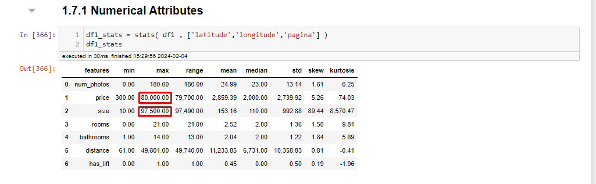
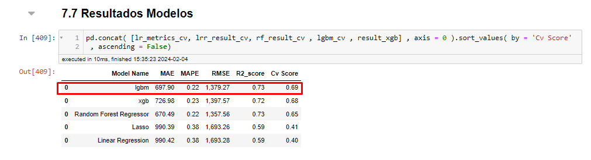
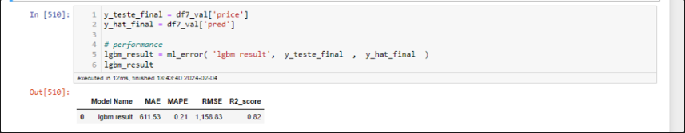
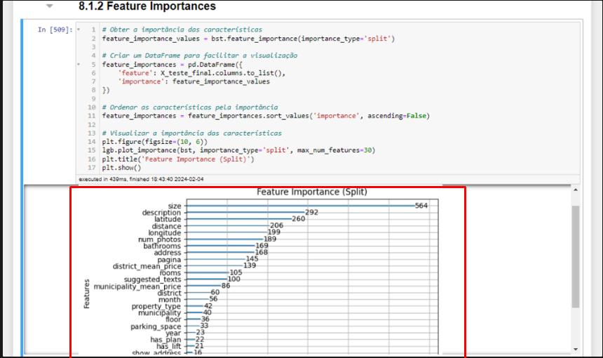
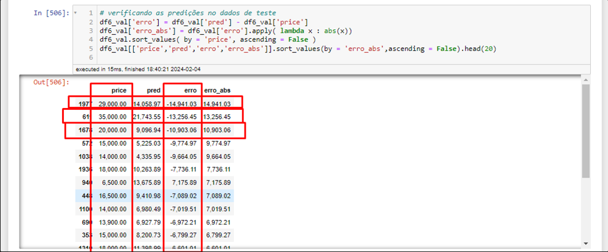
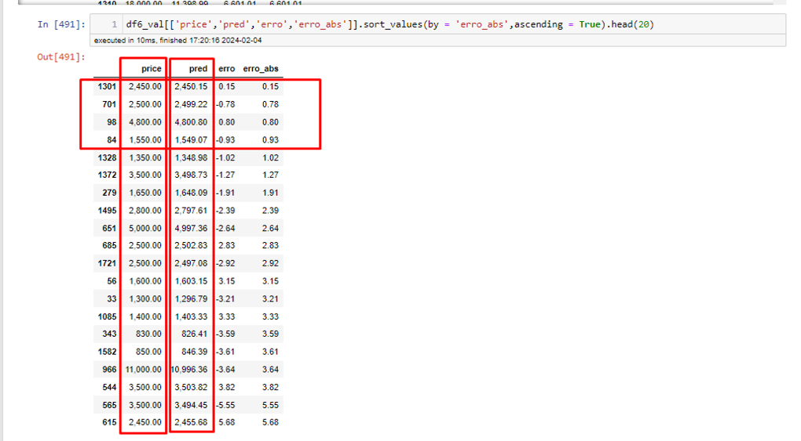

Analysis of real estate data extracted via the Idealista API
Business Problem
The goal of this project is to develop an advanced Machine Learning (ML) model capable of analyzing and learning the dynamics of real estate prices listed on the Idealista website. Using a comprehensive dataset that includes property characteristics (such as location, square footage, number of bedrooms and bathrooms, and amenities), the model will be trained to predict the market value of properties for rent.
Data Origin
- Data Source: The data are obtained directly from the Idealista website, using its official API. This API is a tool that allows access to updated information about properties available for rent.
- API Usage Limits: The Idealista API offers free access with a limit of up to 100 requests per month. If a higher volume of requests is needed, it is necessary to subscribe to a paid plan. So far, the free monthly quota has been sufficient for our needs, often with requests to spare.
- Data Extraction Configuration: Currently, the configuration used in the API is set to search for properties available for rent within a 50 Km radius from the center of Lisbon. This parameter, as well as others, can be adjusted as needed, by modifying the extraction function to meet different research requirements.
- Data Volume and Periodicity: Since the beginning of the project, several data extractions have been carried out, including some months of 2023 and 2024. Although the volume of data collected so far is considered modest, the goal is to continue data extraction over an entire year to build a solid and representative database.
- Data Accumulation Strategy: The intention is to continuously accumulate data to complete at least one year of extraction. This will allow for a robust database, which can be used to train the Machine Learning model with updated and relevant information.
- Monitoring and Evaluation of the Model: With a growing and continuously updated database, the project foresees constant monitoring of the Machine Learning model's performance. The idea is to adjust and optimize the model periodically, ensuring that the rental price predictions are as accurate as possible.
Tools Used
Programming Language: Python API: API provided by the Idealista website.
Method and Problem Resolution
The approach to solving the problem will be cyclical, the same adopted in the Rossmann Chain project, obviously with all the changes and particularities inherent to the project.
The steps described in the Jupyter Notebook will be:
- 1.0 - Data Description
- 2.0 - Feature Engineering
- 3.0 - Variable Filtering
- 4.0 - Exploratory Data Analysis
- 5.0 - Data Preparation
- 6.0 - Feature Selection
- 7.0 - Machine Learning Modeling
- 8.0 - Hyperparameters Fine Tuning
- 9.0 - Error Translation and Interpretation
- 10 - Deploy
Check all the problem resolution in Jupyter Notebook clicking here.
Step 01: Data Description
In this step, I describe all the columns from the original extraction.
- property_code - Unique ID for each property
- thumbnail - shows the property's thumbnail
- external_reference - The "external_reference" feature generally refers to a unique code assigned to a property by another source, such as another real estate platform or a real estate agent. This external reference can be used to track and identify the property across different systems and platforms.
- num_photos - number of photos in the listing
- price - rental price
- property_type - type of property
- operation - rent or sale (in this case, only rent)
- size - size in m2
- exterior - indicates whether the property has an outdoor area (array([ 0., nan]))
- rooms - number of bedrooms
- bathrooms - number of bathrooms
- address - property's address
- province - are the regions (Lisbon, Setúbal, Santarém - came in the extraction)
- municipality - municipalities
- district - are the Districts
- country - PT
- latitude - latitude
- longitude - longitude
- show_address - boolean - whether the advertiser shows the address or not
- url - the listing's url
- distance - distance from the center in meters
- description - description of the apartment
- has_video - indicates whether the listing has a video or not (array([ 0., 1., nan]))
- status - indicates the property's condition array(['good', 'renew', 'newdevelopment', None], dtype=object)
- new_development - boolean - indicates whether the development is new or not
- price_by_area - price divided by the property size price / size
- detailed_type - detailed description of the property type
- suggested_texts - titles and subtitles
- has_plan - whether the property has a floor plan or not
- has3_d_tour - indicates whether the property has a 3d tour
- has360 - whether it has a 360º tour
- has_staging - whether it has staging in the property
- top_new_development - indicates the newest developments
- super_top_highlight - indicates the most valuable or popular properties in a certain area
- floor - indicates the property's floor
- has_lift - indicates whether it has an elevator
- parking_space - indicates whether it has a parking space
- neighborhood - This feature is useful for buyers and tenants who have a preference for a certain neighborhood or want to live in a specific area of the city for reasons such as proximity to work, schools, public transport, among others.
- labels - labels or tags associated with the properties
- page - the page of the extraction (defined in the extraction)
- datetime_scrapy - indicates the date of extraction (defined in the extraction)
- newDevelopmentFinished -
- highlight -
After the extraction, I separated 1000 lines for testing, which will be data that the model has never seen to evaluate the model.
It is important to note that the dataset includes houses that were not rented over the months. It's necessary to remove duplicate houses because I want the model to make predictions based on the characteristics of the houses and not on the time they have been on the market.
Step 1.1.2: Drop Duplicates
The data came with many duplicates either because they are properties that have been on the market for more than a month or due to extraction issues. Therefore, I will only keep properties with unique ‘property_code’.
Step 1.4 : Check NA
In this step, I realized that some columns have many missing values. Therefore, I removed the columns that have many missing values relative to the total data in the dataset. In the first cycle, I will try to keep as many columns and data as possible, and in the following ones, I will start to delete more rows and columns and observe the performance.
Step 1.5.1: Deleting irrelevant columns
Considering that this model will be run several times always with new changes at each iteration, to simplify and automate the process, I will create a function at the start of each block to reduce times.
I deleted the following columns in the first:
- property_code - It is the property ID. It makes no sense to keep it. Moreover, the user will not have this information at the time of prediction.
- external_reference: The "external_reference" feature generally refers to a unique code assigned to a property by another source, such as another real estate platform or a real estate agent. This external reference can be used to track and identify the property across different systems and platforms. Reason for deletion: The user will not have this information at the time of prediction.
- labels - labels or tags associated with the properties. Reason for deletion: Besides the user not having this information, it does not seem to be relevant information.
- neighborhood - This feature is useful for buyers and tenants who have a preference for a certain neighborhood or want to live in a specific area of the city for reasons such as proximity to work, schools, public transport, among others. Despite its relevance, it has many missing data.
- newDevelopmentFinished - Almost all data missing
- highlight - Almost all data missing.
- exterior - Only has data like ‘False’ and ‘nan’, practically empty data.
- super_top_highlight - indicates the most valuable or popular properties in a certain area. There is no way for the user to know this information.
- operation - rent or sale (in this case, only rent), irrelevant column.
- country - Only have PT, so the column is irrelevant.
- url - The user will not have the link at the time of prediction
- price_by_area - Data dividing the price by the area. Keeping this column will overfit the model because it already gives the answer. (The model will multiply ‘price_by_area’ by ‘size’ and will always know the price, besides the user not having this information at the time of prediction).
Step 1.7.1: Descriptive Statistics
In the descriptive analysis, some data stand out, such as a flat having the size of 97,500 meters which is possibly an error, but considering the URL of the listing it seems that the landlord may have considered the area around the property, I will remove it to avoid confusion in the model, and a chalet being rented for 80,000. Removing these outliers, a property of 30,940 square meters appears, which seems a bit excessive, but I will keep it, as it seems to be a large luxury villa. The URLs provided are examples of properties with unusual data points that were considered during the data cleaning and outlier removal process to improve the accuracy of the Machine Learning model.
Step 2: Feature Engineering
In this phase, I included the extraction date. I also calculated the average price by 'province', 'municipality', and 'district' and incorporated it into the dataset. This may have implications such as data leakage, as I am deriving a feature from the response variable. However, I want to see how the model behaves. It's also worth noting that at the moment the user enters the data, I will search for the price through the inputted region.
Step 3: Variable Filtering
In this first cycle, where I will have my model baseline, I will keep as many columns and rows as possible. In later cycles, I might consider filtering the variables to a specific context.
Step 4: Exploratory Data Analysis
In this analysis, the only action taken in cycle 1 was to remove the property of size 97,500 meters, as it could influence the model. Outliers were also kept. At this point, the simplicity of the model was not reduced; variables with a certain degree of correlation were kept.
Step 5: Data Preparation
In this step, I chose not to rescale the data. Regarding encoding, I used label encoder for categorical variables with more elements and map or 0 and 1 for categorical variables with a few distinct elements.
Step6: Feature Selection
In this cycle, I tried to keep as many features as possible, so I skipped the Boruta suggestion. Eventually, in future cycles, I might use it to reduce the complexity of the model.
Step 7: Machine Learning
In this phase, I prepared the data to train the model. As of today, 04-02-2024, this was the proportion of data separated for training and testing.
The following models were trained and evaluated:
- Linear Regression
- Lasso
- Random Forest
- LGBM
- XGBOOST
Linear Regression
Functioning: Linear regression finds the best straight line that relates the independent variables with the dependent variable. It calculates the coefficients of the line (slope and intercept) that minimize the error between the predictions and the real values.
Assumptions: Assumes there is a linear relationship between input and output variables, and that errors are normally distributed and independent.
Lasso (Least Absolute Shrinkage and Selection Operator)
Functioning: Similar to linear regression, but adds a penalty on the absolute size of the regression coefficients. This can reduce some coefficients to zero, effectively selecting the most important variables.
Assumptions: Like linear regression, it assumes a linear relationship. Variable selection is useful when we have many variables or expect that only a few are relevant.
Random Forest
Functioning: Builds many decision trees during training and makes predictions by taking the average of the predictions from all the trees for regression or the majority of votes for classification.
Assumptions: No specific assumption about the distribution of the data. Good for handling non-linear data and complex interactions between variables.
LGBM (Light Gradient Boosting Machine)
Functioning: Uses the boosting algorithm to sequentially build decision trees in such a way that each new tree corrects errors made by previous trees. Optimized to be fast and efficient on large datasets.
Assumptions: Does not make strict assumptions about the shape of the data, but can be sensitive to overfitting on very small data.
XGBOOST (eXtreme Gradient Boosting)
Functioning: A specific and optimized implementation of the gradient boosting algorithm, which builds decision trees in sequence, where each one corrects the errors of the previous one, focusing on computational efficiency and performance.
Assumptions: Like LGBM, it is flexible regarding the distribution of the data, but parameters must be carefully chosen to avoid overfitting.
BASELINE
Below is the baseline of the first cycle.

As the LGBM model performed the best, I decided to use it on the data the model has never seen before and check its performance.
RESULTS ON TEST DATA
On the unseen data, the model achieved the following performance.

It considered the following features as the most relevant.
The model performed better on the test data than in training, which caught my attention, and I immediately thought of data leakage since I derived some features from the response variable. However, the derived features did not rank at the top as being the most important, which reassured me more, but it does not rule out further analysis.
The model performed better on the test data than in training, which caught my attention, and I immediately thought of data leakage since I derived some features from the response variable. However, the derived features did not rank at the top as being the most important, which reassured me more, but it does not rule out further analysis.
Possible Reasons
- Variation in Data: If the test data are, by chance, easier to predict or less varied than the training data, the model can perform better on the tests. This can happen if the distribution of the test data does not fully represent the complexity of the training data.
- Regularization and Model Complexity: If using regularization techniques (such as Lasso or Ridge), the model may be penalized to avoid overfitting to the training data, leading to slightly worse performance in training but more generalizable, which performs better on unseen data.
- Size and Quality of Data: The split between training and testing might result in a test set that does not capture the entire complexity or all the characteristics present in the training set. Additionally, the quality of data (presence of outliers, for example) can differ between the sets.
Checks to Be Made in Next Cycles
- Review of Data Split: Ensure the split between training and testing was done appropriately, ensuring both sets are representative of the problem as a whole. Techniques such as cross-validation can help ensure that the model is tested more thoroughly.
- Analysis of Distribution: Analyze the distribution of features and the response variable in the training and test sets to identify significant differences. Discrepancies might indicate that the sets are not entirely comparable.
- Cross-Validation: Applying cross-validation to assess the model's performance on different subsets of the data can offer a more holistic view of the model's generalization capability.
- Outlier Analysis: Check for the presence of outliers in the training data that might be negatively affecting the model's performance, while their absence in the test data could artificially inflate performance.
- Review of Derived Features: Ensure that the way derived features were calculated and applied to both training and testing truly avoids data leakage. Using information from the training set to derive features that will be used in testing, as you did, is generally a safe practice.
Error Interpretation
The MAE of 611.53 indicates, on average, how much the model deviate his predictions from the actual values. I consider this value to be quite high, as I think when a user wants to put a house on the market, they would look for a more accurate value. In the next cycles, I will work to reduce this error.
The MAPE of 21% indicates that the model's predictions deviate, on average, by 21% from the actual values. This can be good for someone who has no idea how to price a rental, but it can still be improved.
The high RMSE indicates that the model makes errors in predicting high values, as the error here is squared, increasing when we have large errors.
We can observe that for very high prices or outliers, the model still makes a lot of mistakes.
For values closer to the average, the model makes reasonable predictions. This leads me to think that for now, the model does not generalize well over outliers.
Next Steps
To proceed, I'll focus on growing the dataset through frequent updates. I'm also looking to lower the MAE by experimenting with different encoders, refining features, and removing non-essential ones like the extraction page number. The goal is to make the model easier to use by requiring less information from the user, without sacrificing accuracy. Additionally, I aim to explore why the model fares better with test data than training data to prevent any data leakage or overfitting.